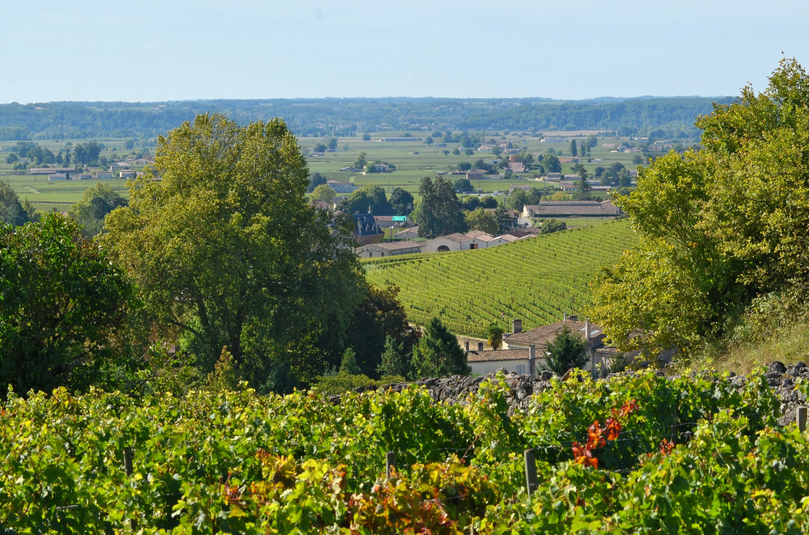
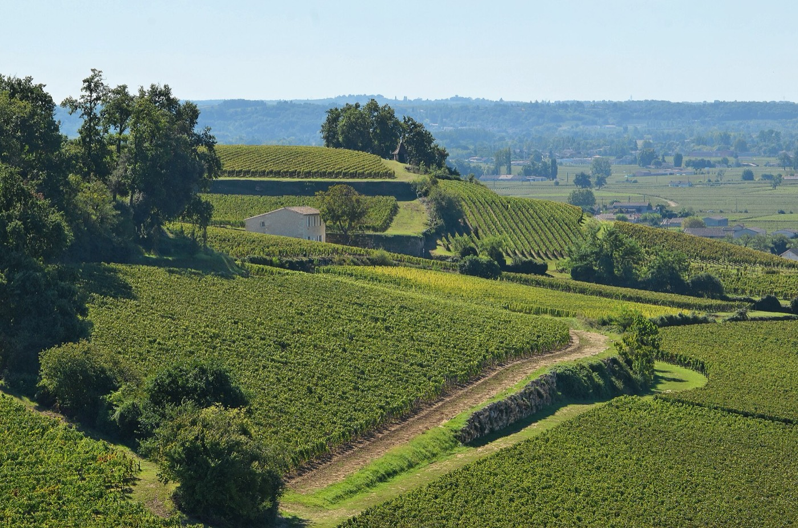

Il y a dix ans, sur un départ de course, on comptait grosso modo une femme pour trois hommes. Aujourd'hui, la proportion approche l'équilibre, et personne dans le milieu ne s'attend à ce que la tendance s'inverse. Ce n'est pas un détail statistique : c'est en train de changer la façon dont un club de campagne comme le nôtre s'organise le dimanche matin.
Les chiffres de la rentrée

Le Baromètre du Running 2026, réalisé en avril auprès de plus de 3 200 coureurs réguliers, compte 44 % de femmes parmi ses répondants. À l'échelle du pays, elles représentent désormais plus de 40 % des pratiquants, contre environ 25 % il y a dix ans. Dans le même temps, l'Observatoire du Running recense 13,2 millions de Français ayant couru en 2025, soit un million de plus qu'il y a cinq ans.
Le chiffre le plus parlant est ailleurs. Toujours selon ce baromètre, 72 % des coureuses interrogées veulent se lancer sur un marathon ou un trail long. On est loin du cliché de la petite sortie santé du dimanche : l'ambition est là, elle est assumée, et elle cherche surtout un endroit où s'exprimer.
Ce que ça demande à un club
Pas grand-chose, en vérité, mais il faut le faire vraiment. D'abord proposer plusieurs allures sur la même sortie, pour que personne ne se retrouve seul à cinq cents mètres derrière. C'est la base de la vie de groupe, et cela profite autant au débutant de 55 ans qu'à la coureuse qui prépare son premier semi.
Cela suppose aussi d'accepter qu'une sortie de club n'est pas une compétition déguisée. Le jour où le groupe de tête décide de faire parler la poudre sur les trois derniers kilomètres, la moitié des gens ne reviennent pas la semaine suivante. La sortie longue se court à l'allure du plus lent, c'est une règle simple et elle vaut pour tout le monde.
Ensuite, il y a la question des horaires. En automne et en hiver, courir seule à la nuit tombée sur une route de vignoble n'a rien d'engageant, et c'est l'un des freins que les coureuses citent le plus souvent. Un départ groupé à heure fixe règle le problème sans avoir besoin d'en faire un discours.

Enfin, il faut arrêter de considérer qu'un objectif ambitieux doit se mériter par des années de club. Quelqu'un qui arrive en annonçant vouloir faire un trail dans l'année n'a pas besoin qu'on lui explique que c'est trop tôt, mais qu'on lui montre comment construire ça sans se blesser.
La rentrée, le bon moment


Septembre est traditionnellement le pic des débuts en course à pied, et l'actualité le confirme : La Parisienne, l'une des plus grosses courses féminines de France, tient sa 29e édition du 11 au 13 septembre. Des dizaines de milliers de participantes, dont beaucoup n'avaient jamais couru un kilomètre l'année précédente.
Nous n'avons pas d'ambition de cette taille à Montagne, et ce n'est pas le sujet. Mais le Trail des Vignes du 4 octobre approche, avec sa formule marche et ses parcours accessibles, et c'est exactement le genre d'objectif qui donne envie de s'y mettre sans avoir à se prendre pour une athlète.
Si vous avez envie d'essayer, le plus simple est de venir voir. Une sortie d'essai ne coûte rien, ne vous engage à rien, et il y a de fortes chances que vous partiez avec quelqu'un qui courait son premier kilomètre il n'y a pas si longtemps. Écrivez-nous, on vous dira où et quand on part.